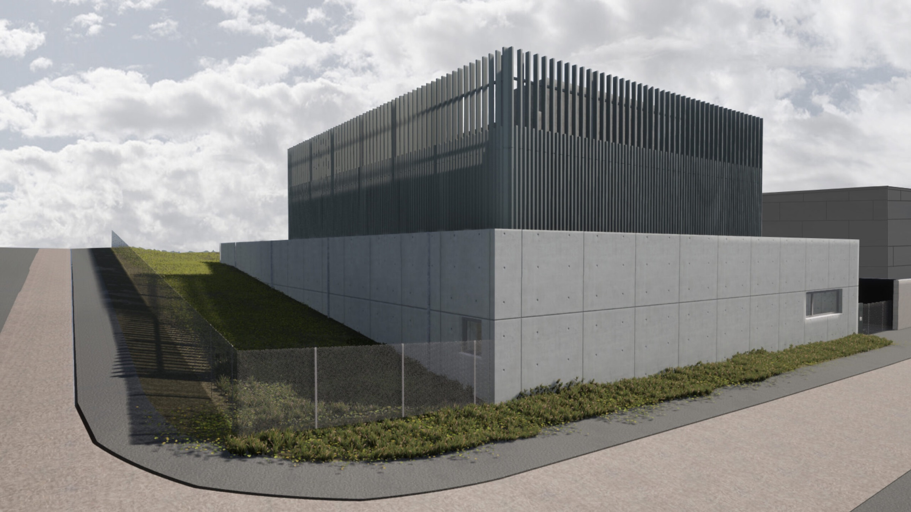
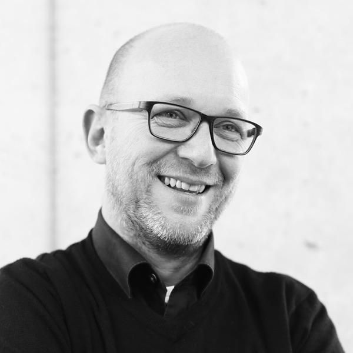
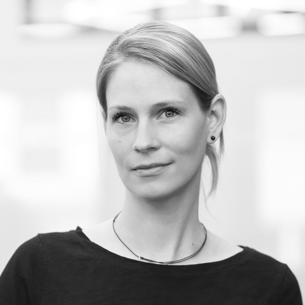
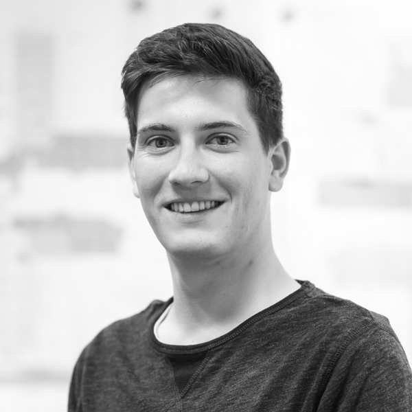
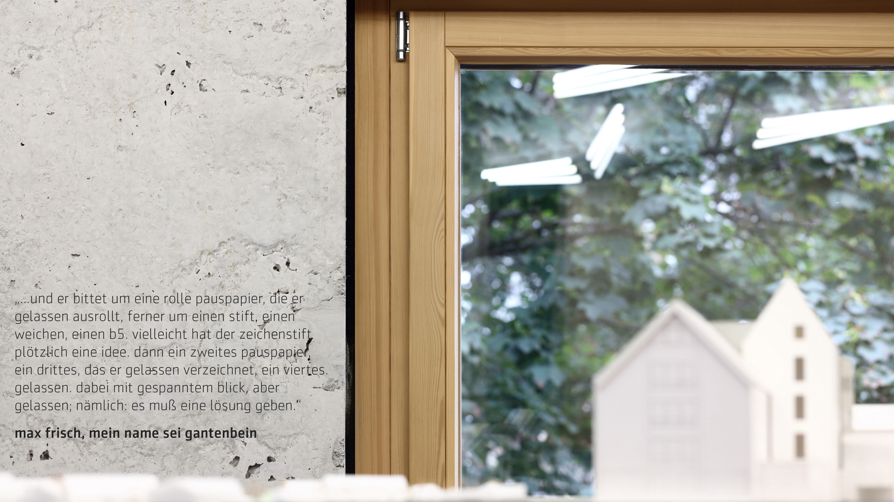
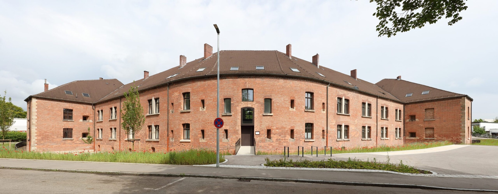
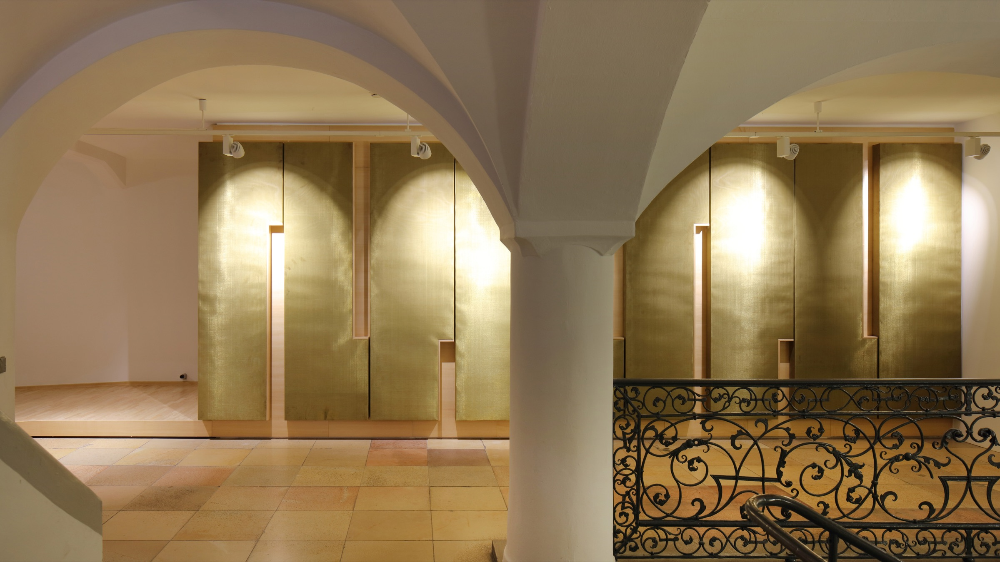

Profil
Wir machen komplexe Bauprojekte einfacher.
Weil wir Gestaltung, Technik und Wirtschaftlichkeit von Anfang an zusammenbringen. Architekten und Generalplaner in Ulm, seit 2002.
- hochstrasser. Architektur. Interdisziplinär.
- hochstrasser. Architektur weitergedacht.
- hochstrasser. Architektur ganzheitlich gedacht.

Integrale Planung
Gemeinsam planen. Einfach bauen.
Komplexe Bauprojekte entstehen nicht mehr in einzelnen Fachbereichen, sondern im Zusammenspiel aller Beteiligten. Deshalb verbinden wir Architektur und technische Fachdisziplinen von Beginn an in einem integralen Planungsprozess. Klare Verantwortlichkeit, kurze Entscheidungswege und frühzeitige Abstimmungen schaffen Transparenz, vereinfachen Schnittstellen und erhöhen die Planungs-, Termin- und Kostensicherheit.
Komplexität braucht keine komplizierten Prozesse. Sie braucht klare Strukturen.
Mehr erfahrenArchitektur ist bei uns keine Einzeldisziplin
Wir sind ein interdisziplinäres Team aus Architekt:innen und Ingenieur:innen mit Zusatzqualifikationen in Energieberatung, Bauphysik, Brandschutz, Nachhaltigkeit, DGNB & Zertifizierungen, Barrierefreiheit und Digitales Bauen. Die Fragen, die ein Projekt teuer machen, stellen wir deshalb am ersten Tag — nicht in der Ausführung.
- Gründung
- 2002
- Projekte
- über 120
- Auszeichnungen
- 27
- Fachdisziplinen
- 8
- BDA-Berufungen
- 4
- Team
- 35
Leitbild
Wir sind überzeugt, dass gutes Bauen mehr ist als gute Architektur. Erfolgreiche Projekte entstehen dort, wo Gestaltung, Wirtschaftlichkeit, Nachhaltigkeit und technische Kompetenz von Anfang an zusammengedacht werden. Deshalb setzen wir auf integrale Planung. Wir verbinden Architektur, Fachplanung und Projektsteuerung in einem gemeinsamen Prozess, schaffen klare Verantwortlichkeiten und treffen Entscheidungen auf einer fundierten, interdisziplinären Grundlage.
Individualität
- Wir entwickeln die passgenaue Lösung.
- Wir begleiten von der Idee zum Erfolg.
- Wir sind authentisch.
Partnerschaft
- Wir pflegen offenen, ehrlichen Austausch.
- Wir begegnen uns respektvoll und auf Augenhöhe.
- Wir handeln im Sinne gemeinsam vereinbarter Ziele.
Verantwortung
- Wir schaffen angemessene und ganzheitliche Lösungen.
- Wir handeln kompetent und konsequent.
- Wir sind der Baukultur verpflichtet.
Begeisterung
- Wir haben Lust auf Herausforderung.
- Wir gestalten aus Leidenschaft und Überzeugung.
- Wir lösen unsere Aufgaben mit Freude und Kreativität.
Expertise


Architektur
Das Architekturteam
Brandschutz
Unser Ansprechpartner aus dem Team:
Maximilian Höppler
Nachhaltigkeit
Unser Ansprechpartner aus dem Team:
Sebastian Baier
Bauphysik
Unser Ansprechpartner aus dem Team:
Lukas Fischer
DGNB / Zertifizierung
Unser Ansprechpartner aus dem Team:
Sebastian Baier
Barrierefreiheit
Unsere Ansprechpartnerin aus dem Team:
Sonja Lambert

Digitales Bauen
Unser Ansprechpartner aus dem Team:
Simon Müller
Generalplanung
Unser Ansprechpartner aus dem Team:
Michael Geitner

Büro
Das sind wir. Das zeichnet uns aus. Lernen Sie uns kennen.
Team ansehen
Projekte
Über 120 Projekte seit 2002 — vom Denkmal im laufenden Betrieb bis zum Strohballenatelier.
Projekte ansehen
Kontakt
Sie planen ein Objekt oder haben eine Idee für eine mögliche Umsetzung. Genau dann lohnt sich das erste Gespräch.
hochstrasser. anfragen